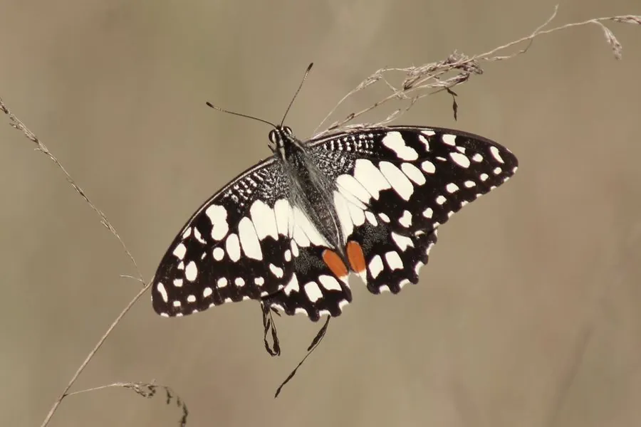

昆虫 · 动物界
达摩凤蝶 Papilio demoleus

亚洲常见的凤蝶，翅面黑底黄斑、后翅无尾突，飞行快速，幼虫取食柑橘叶片，是柑橘园里常见的害虫。
- 分类
- 门节肢动物门纲昆虫纲目鳞翅目科凤蝶科属凤蝶属
- 栖息环境
- 柑橘园、公园、庭院、林缘与花丛
- 地理分布
- 南亚、东南亚及中国南方地区
- 保护级别
- IUCN 暂无评估；中国未列入国家重点保护名录
物种志
达摩凤蝶翅展 8–10 厘米，翅面以黑色为底，前翅和后翅布满黄色或淡黄色的斑块与条纹，后翅没有凤蝶常见的长尾突，故名“无尾凤蝶”；翅反面颜色较浅，斑纹更清晰。它飞行快速，常在花丛、果园和路边的柑橘树附近活动。
它广泛分布于南亚、东南亚以及中国南方，栖息于柑橘园、公园、庭院和林缘，成虫吸食花蜜，幼虫取食柑橘、柚、柠檬等芸香科植物的叶片。雌蝶在嫩叶上单粒产卵，幼虫孵化后经历五次蜕皮，早期幼虫外形像鸟粪，靠拟态躲避天敌，老熟后化蛹。它一年多代，在南方几乎全年可见；幼虫数量多时会危害柑橘嫩梢，是农业上需要注意的害虫，但成虫形态优美，也常被作为观赏昆虫。
形态与习性
- 食性成虫吸食花蜜，幼虫取食柑橘等芸香科叶片
- 翅展8–10 cm
- 寿命成虫约 2–4 周
- 繁殖卵生，雌蝶在嫩叶上单粒产卵，幼虫五龄
- 活动节律昼行性，晴天活动频繁
- 特点后翅无尾突，黑底黄斑，飞行快速
趣味知识
- 达摩凤蝶的后翅没有凤蝶常见的长尾突，因此又叫“无尾凤蝶”。
- 它的幼虫早期外形像鸟粪，靠拟态躲过鸟类捕食。
- 达摩凤蝶的幼虫取食柑橘叶片，数量多时会对柑橘园造成危害。